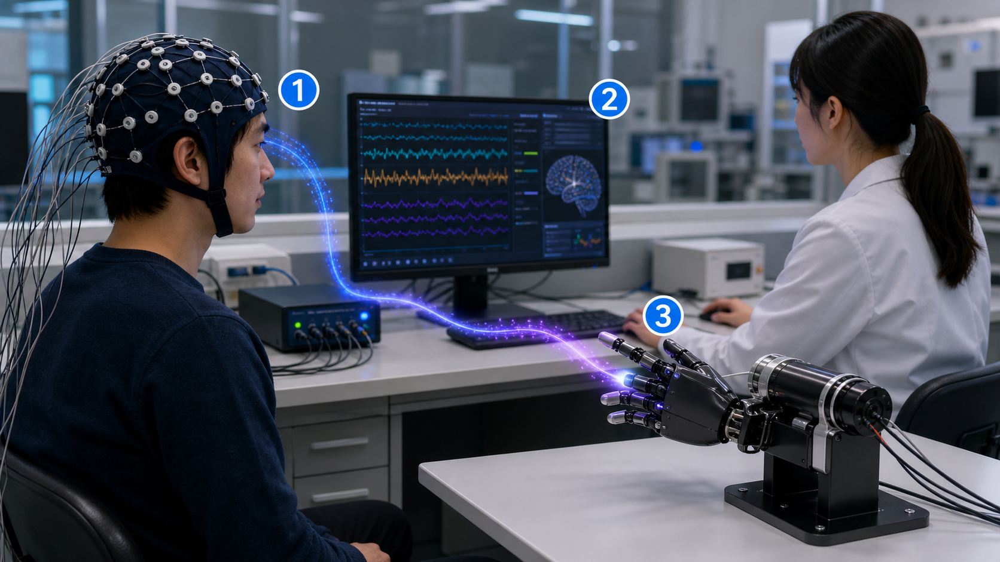

1. 脳が「動かしたい」と考える
脳は小さな電気を出している。BCIは、その変化を合図として使う。
たとえると、ゲームのボタンを指ではなく脳の電気で押す感じ。

日刊工業新聞 2026/7/2
手のかわりに、脳の電気を合図にする。
今日の芯
BCI（ビーシーアイ）は、脳波（のうは）を読み取る。 AI（判断する仕組み）が命令に変え、 ロボットハンドや車いすなどを動かす。
3Dで触る
脳は小さな電気を出している。BCIは、その変化を合図として使う。
たとえると、ゲームのボタンを指ではなく脳の電気で押す感じ。
復習テスト